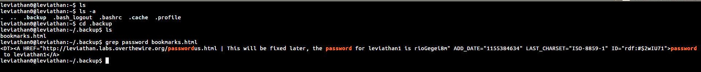

Leviathan Wargames!!!
This is the first challenge. We connect to the host using ssh. First we use 'ls' command to list the files, but it does not return any files.
Now we use the command 'ls -a' to list the hidden files. We see a directory '.backup'. We open it seeing a file 'bookmarks.html' inside the directory. We 'cat' the file but the file contains too much strings to track the password.
Now comes the interesting part of extracting password. The trick is to 'grep' the file for keyword 'password'.
Command-'grep password bookmarks.html'. This will return the lines containing the keyword 'password'. We will easily locate the password for the next level.
